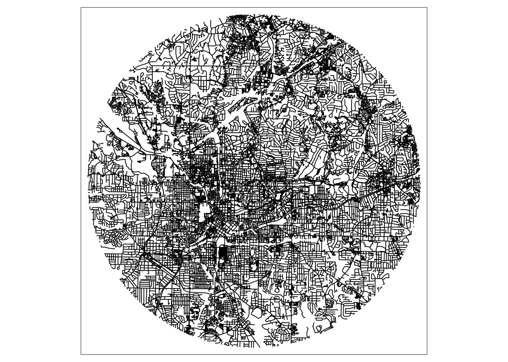
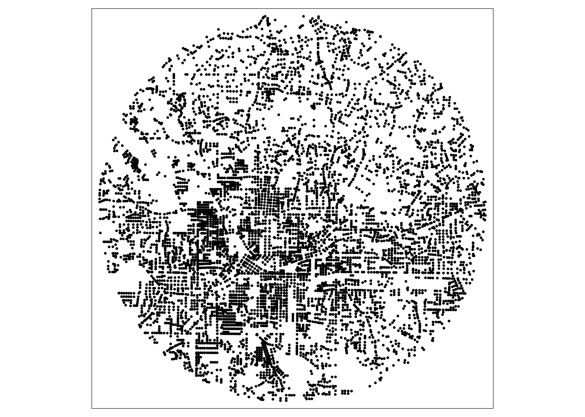

This is a demo showing how the bicycle infrastructure data that I may post publicly may be read into R and converted into other formats, such as shapefiles compatible with Esri software and CSVs.
I use the here package to manage relative folder paths. On my computer, the data are in a folder called “data-to-share”, which is in a folder called, “data-processed”, which is one level beneath the folder containing my RStudio project file. I use the sf package to manage the vector spatial data.
library(here)
library(sf)
library(tidyverse)
library(tmap) #static maps
library(mapview) #interactive maps
library(knitr)#to use kableLoad spatial data
setwd(here("data-processed","data-to-share"))
load("lookup_edge_geo.RData")How many observations in the spatial data?
nrow(lookup_edge_geo)## [1] 65998Map the segments
lookup_edge_geo %>%
tm_shape()+
tm_lines()
Load aspatial data
setwd(here("data-processed","data-to-share"))
load("edge_month_share.RData")How many observations are in the aspatial data?
nrow(edge_month_share)## [1] 1583952How many unique edge_ids?
n_distinct(edge_month_share$edge_id)## [1] 65998How many months?
n_distinct(edge_month_share$study_month)## [1] 24How many miles of bicycle infrastructure during the last study month?
edge_month_share %>%
filter(study_month==24) %>%
group_by(infra_6cat_long_legend_nodirt) %>%
summarise(length_mi=sum(length_mi,na.rm=TRUE)) %>%
kable()| infra_6cat_long_legend_nodirt | length_mi |
|---|---|
| 1-Trail-Paved | 50.542977 |
| 2-Lane-Protected | 4.734300 |
| 3-Lane-Buffered | 3.576227 |
| 4-Lane-Conventional | 55.307372 |
| 5-Sharrow | 36.912441 |
| none | 2254.033111 |
The bicycle infrastructure data in August of 2018 are mapped here:
Load spatial data on intersections
setwd(here("data-processed","data-to-share"))
load("lookup_inters_geo.RData")
names(lookup_inters_geo)## [1] "inters_id" "geometry"How many intersections?
nrow(lookup_inters_geo)## [1] 7813Load the one-to-many look-up table between intersections and edges
setwd(here("data-processed","data-to-share"))
load("lookup_inters_edge_nogeo.RData")How many edges per intersection?
lookup_inters_edge_nogeo %>%
group_by(inters_id) %>%
summarise(n_edges=n()) %>%
ungroup() %>%
mutate(dummy=1) %>%
group_by(dummy) %>%
summarise(
n_edges_per_inters_mean=mean(n_edges,na.rm=T),
n_edges_per_inters_med=median(n_edges,na.rm=T),
n_edges_per_inters_min=min(n_edges,na.rm=T),
n_edges_per_inters_max=max(n_edges,na.rm=T)
) %>%
pivot_longer(-contains("dummy")) %>%
dplyr::select(-contains("dummy")) %>%
kable()| name | value |
|---|---|
| n_edges_per_inters_mean | 3.795085 |
| n_edges_per_inters_med | 3.000000 |
| n_edges_per_inters_min | 1.000000 |
| n_edges_per_inters_max | 55.000000 |
How many observations in the aspatial data?
It may be desirable to convert intersections to points, as the file size is smaller. That can be done using st_centroid() from the sf package.
lookup_inters_point_geo=lookup_inters_geo %>%
st_centroid()Map the intersections represented as points:
lookup_inters_point_geo %>%
tm_shape()+
tm_dots()
Convert the segment-level vector data data to shapefiles:
setwd(here("data-processed","data-to-share","shapefiles-edge"))
st_write(lookup_edge_geo,
dsn = "lookup_edge_geo.shp",
append=FALSE,#overwrite
layer = "lookup_edge_geo.shp", driver = "ESRI Shapefile")Convert the intersection-level vector data to shapefiles:
setwd(here("data-processed","data-to-share","shapefiles-intersection"))
st_write(lookup_inters_geo,
dsn = "lookup_inters_geo.shp",
append=FALSE,#overwrite
layer = "lookup_inters_geo.shp", driver = "ESRI Shapefile")setwd(here("data-processed","data-to-share","csv"))
write_csv(edge_month_share,file="edge_month_share.csv")Warning: the aspatial data contains 1,583,952 observations so may not load in Excel, as Excel 2010 is limited to 1,048,576 rows.